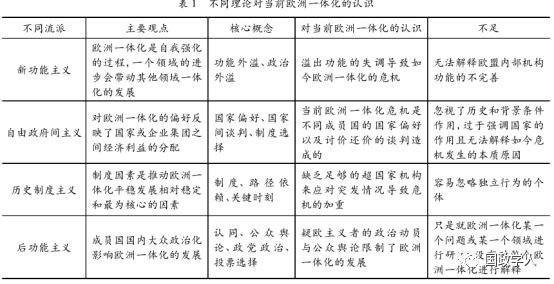

收录于合集

简 介
【作者】 高奇琦(1981—)，男，博士，华东政法大学政治学研究院院长，教授，博士生导师。张鹏(1992—)，男，华东政法大学政治学研究院研究助理。
**【 编辑】**杨艺华
【校对】 金 琳
【期刊】 《探索》2019 年第 1 期
内容提要
当前欧洲一体化正处于下行时期，英国“脱欧”是欧洲一体化进程中的一次重大挫折性事件。西方传统理论流派从不同角度对欧洲一体化进程提出解释框架，但随着欧洲一体化的发展，这些理论流派的一元主义逻辑与简单化的操作标准已难以应对如今欧盟治理的复杂性。新结构政治学是一种新的分析框架，系统、过程、动力与行动者是这一分析框架的四个要素。从新结构政治学的视角来看，英国“脱欧”不仅反映出欧盟治理机制存在的不足，更是欧洲一体化进程中内外矛盾激化的产物。英国“脱欧”可能成为逆转欧洲一体化进程的历史关节点，但也提供了欧盟对其内部进行权力集中和利益整合的契机。因此，欧盟会进入一段相当长时间的自我调整期。这段调整期时间的长短，取决于欧盟各成员国国内政治的博弈。在这段调整期中，欧盟可能还会发生成员国退出的危机性事件，欧盟也可能在范围缩小的基础上逐步增加内部整合的效果。
高奇琦
正文
经过几十年的发展，欧盟已经成为超国家行为体中的显著代表。但随着欧洲一体化进程的加快，欧盟也正面临着“合法性”以及“民主赤字”等问题。在经历英国“脱欧”事件之后，欧洲一体化进程如何继续走下去，更是成为欧盟急需解决的问题。本文运用新结构政治学的分析框架，探析英国“脱欧”与欧洲一体化前景之间的关系。首先，笔者梳理中西方学者关于英国“脱欧”对欧洲一体化进程的争论，分析两种截然相反却各具合理性的观点。其次，在西方传统欧洲一体化分析理论的基础上，提出新结构政治学的分析框架。再次，笔者就系统、动力、过程与行动者这四个要素如何影响欧洲一体化进程进行系统分析。最后，在新结构政治学分析框架的基础上，勾勒未来欧洲一体化的进展以及可能性。
****1
英国“脱欧”: 逆转欧洲一体化的历史关节点?
**2016 年的英国“脱欧”是欧洲一体化历史上的一次重大挫折性事件。**严格意义上而言，欧盟既不是一个民族国家，也不是一个传统意义上的国际组织或者机制。但作为全球化背景下一个独特的行为体，欧盟对世界政治和经济产生了极其重要的影响。早在 20 多年前，美国著名经济学家罗伯特·鲍德温( Robert Baldwin) 就认为，世界上的区域一体化总体上将遵循欧洲模式。而在很多学者看来，欧盟也是非欧盟国家应该模仿的典范。自 1992 年丹麦人拒绝接受《马斯特里赫特条约》以来，公投对于欧洲一体化的发展往往具有无可比拟的影响。全民公投已经成为西方现代代议制民主政治的重要补充形式，但英国“脱欧”公投是欧洲一体化发展至今最为重要的关节点。一个成员国从欧盟退出是史无前例的，其后果在相当长的时间内，对英国与欧盟的政治、经济都会产生深刻的影响。
**对此，一些观察者认为，英国 “脱欧”事件深层次的影响可能是导致欧盟碎片化的程度加深，并成为逆转欧洲一体化趋势的历史关节点。**这一部分观点的支持性意见主要如下
:第一，英国“脱欧”暴露出欧盟内部难以调和的利益分歧与合法性危机。《马斯特里赫特条约》的签订标志着欧洲一体化从经济实体向经济、政治实体的过渡。但自从该条约签订以后，关于欧盟合法性问题的争论就没有停止过。在欧洲一体化的过程中，成员国与欧盟机构都以不同的方式合法化其政策。成员国的国家政府声称他们的政策是合法的，因为他们是具有独立主权的国家。欧盟也声称其政策具有合法性，因为国家政府间签订的条约依据国际法的规定是有效的。英国“脱欧”在很大程度上是英国特定历史文化传统和近年来戴维·卡梅伦( David Cameron) 政府的政策失误所致，但也反映出欧盟所面临的深刻合法性危机。英国公投结果虽然具有偶然性，但公投本身在欧洲一体化和英国未来发展问题上撕裂了英国社会，助长了极右思潮的影响。
第二，英国“脱欧”的“示范效应”可能会引发欧洲一体化逆潮。近十年来，许多反对欧洲一体化的右翼民粹主义政党，如荷兰的极右翼自由党、丹麦的人民党、瑞典的民主党在国内大选中已经获得了广泛的选民支持。这些极右翼民粹主义政党善于运用民粹主义言辞，鼓动民众反对欧洲一体化进程。在英国公投之后，法国极右翼党———国民阵线主席玛丽莲·勒庞( Marine LePen) 便发表疑欧言论，声明若 2017 年大选胜利，她将仿照英国举行“脱欧”全民公投。虽然在 2017 年的法国大选中勒庞落选，但值得注意的是，在参与投票的选民中依然有30%以上的选民选择支持勒庞。匈牙利总理欧尔班·维克托( Orban Viktor) 则坚持就欧盟的难民配额举行全民公投，以对抗欧盟当前的庇护政策。在欧盟成员国中愈演愈烈的公投运动正成为欧洲一体化中的一个反转力量。
**另一部分观点则认为，英国 “脱欧”仅仅是欧洲一体化进程中的一次突发事件，其重要性可能被媒体过分夸大，反对就英国“脱欧”进行过度解读。**这些观察家认为，英国“脱欧”虽然在一定程度上不利于欧洲一体化进程的发展，但总体上不会逆转欧洲一体化的大趋势。英国加入欧洲共同体后，主权问题与国家的利益分歧一直影响着英欧关系，英国始终对欧盟持有一种若即若离的态度。同时，基于国家主权平等和权利义务对等原则，欧盟成员国之间已经签订了相关法律条约。相关法律条约的存在也约束着各成员国的行为。因此，英国“脱欧”的影响并没有想象中那么严重，甚至说英国“脱欧”对于欧盟的经济影响都是微不足道的。这一观点的支持性意见主要如下:
第一，英国长期以来都是欧洲一体化“三心二意”的旁观者。在最初形成“欧共体”的小团体中并没有英国。英国自 20 世纪 70 年代加入“欧共体”后，一直秉持着一种矛盾的态度。作为疑欧主义的发源地，英国政府乃至民众对欧盟所实施的计划和政策一直秉持一种怀疑的态度。撒切尔夫人在欧洲学院发表的“布鲁日演讲”直接开启了成员国官方对欧盟政策持公开反对的先河，让反对意见的话语逐渐清晰化。1975 年，仅仅在加入“欧共体”不满两年的时间内，英国便因为持续的石油危机进行了第一次“脱欧”公投，只不过最终的结果是以 66%的投票者选择继续留欧而结束，进而化解了此次的“脱欧”风波。而 1992 年 9 月英国退出欧洲货币体系汇率机制也被德国央行前行长赫尔穆特·施莱辛格等人视为英国退出欧盟的开端。同时英国的精英阶层又热衷于夸大民族主义，强调民族优越感。在英欧关系的历史上，英国一直在身份认同上存在“盎格鲁中心主义”。以上这些都导致英国在长期参与欧盟的活动中扮演着疑欧主义政策积极响应者的角色。
第二，欧盟法律框架会限制成员国的退出。目前法治已经成为欧盟的一个重要原则。欧盟层面上刚性的法律要求对各成员国产生了一种约束力。2014 年 3 月 11 日，在欧委会发布的《关于加强欧盟法治的新框架》中提出要加强监督管理机制建设的新框架，以有效地保证成员国施行法治。在这种法律秩序下，欧盟的特定机构有权制定法律，直接适用于所有成员国。各成员国都要参照欧盟的法律，这已经成为一种传统，并且短期内不会轻易发生改变。欧盟形成了独具特色的法律原则，即在成员国国内法与欧盟法律之间形成冲突的时候，以欧盟法为准。这就意味着，即便英国单方面选择脱离欧洲，也需要满足《里斯本条约》有关成员国“脱欧”的相关规定。
然而，作为首个选择退出欧盟的国家，英国的一举一动都将牵动着整个欧洲的发展，影响着欧洲一体化的进程。英国 “脱欧”所带来的影响大概包括以下两方面 : 一方面，英国“脱欧”打开了欧盟的 “潘多拉魔盒”，在相当长的一段时间内将对欧洲一体化进程造成严重的影响。 英国“脱欧”虽然满足了英国部分公民民主的需求，但对英国以及欧洲未来的经济发展产生不利的影响。英国“脱欧”可能会形成一种示范效应，进而引发“脱欧潮”，导致欧洲碎片化的程度加剧。英国“脱欧”还可能会与欧债危机、难民危机相结合，给欧洲一体化的未来发展带来更大的不确定性。 **另一方面，英国 “脱欧”也有利于欧盟的结构调整与政策优化。**欧洲一体化的发展历程表明，只有内部的重大危机才能推动成员国克服分歧，进一步探寻共识，完成平常所不能完成的任务。例如在伊拉克危机的刺激下，一向被认为是政治上不可能的《欧洲安全战略》破冰而出。而欧元区危机和英国“脱欧”也给欧盟民主宪法的重新修正带来新的动力。总体而言，关于英国“脱欧”对欧洲一体化的影响产生了两种截然相反的观点，这两种观点都有其各自的合理性。本文将从新结构政治学的分析框架出发，考察英国“脱欧”在整个欧洲一体化过程中所处的位置以及未来欧盟发展的前景。
**
**
** **2
新旧分析理论的结构性转换
欧洲一体化研究是国际关系研究中的重要组成部分。因此，面对欧盟过去十年来所出现的一系列重大挫折，一些研究欧盟的重要学者也试图运用各种理论来分析、理解与解释欧盟所经历的危机。他们主要从交易理论、新功能主义、政府间主义以及制度主义等理论对当前欧盟所发生的危机进行解释。西方各理论学派的研究总结了欧洲一体化发展的宝贵经验，但这些理论具有一元主义逻 辑解释下的宗教传统与简单易行的特征。这为西方国家乃至欧盟的发展提供了便捷的理论支撑，但随着时代变迁与欧洲一体化的发展，这种传统的一元主义逻辑与简单化的操作标准已难以应对欧盟治理的复杂性。新的理论正在出现，但针对英国“脱欧”还没有重要的理论解释，对欧洲一体化所面临困境的解释也缺乏力度。
虽然新功能主义与自由政府间主义已经不是大多数学术分析的核心理论，但它们依旧是如今解释欧洲一体化现状习惯沿用的理论。传统新功能主义者认为，欧洲一体化是由于国家之间政治和功能的需求外溢而逐步实现的。对此，阿恩·尼曼( Arne Niemann) 与德鲁斯·伊安努( Demosthe-nes Ioannou) 在新功能主义原有核心理论功能外溢与政治外溢的基础上增加了培养外溢，认为近些年来欧洲一体化所出现的一系列问题是经济与货币联盟( EMU) 的这三个溢出机制的失衡所造成。弗兰克·希梅尔弗尼格( Frank Schimmelfennig) 则运用自由政府间主义理论把欧盟内部国家的针对危机的管理形容为“鸡肉游戏”，成员国的国家偏好导致成员国政府之间谈判的讨价还价，最终产生合作解决方案进而避免了欧元区的崩溃。但正如坦贾·波泽尔( Tanja Borzel) 和托马斯·瑞斯( Thomas Risse) 所言: “新功能主义和自由政府间主义在为什么成员国面对难民危机挑战时更喜欢维持现状甚至选择欧洲一体化解体上，没有给出一个令人满意的答复。虽然这两大理论是目前解释欧洲一体化最主要的理论体系，但其框架依旧存在问题，并不能很好地描述欧洲一体化目前所发生的困境。例如，按照新功能主义的外溢概念，欧盟内部应该早已建立健全的财政联盟，以此来应对一体化发展所面临的困境。而自由政府间主义也通常只能解释危机发生后欧盟成员国的应对措施，无法解释危机发生的本质与原因。
同时，传统理论流派中的新制度主义对当前欧洲一体化的解释也比较重要。对此，马克·波拉克( Mark Pollack) 得出结论: “新制度主义( 理性选择主义、历史制度主义、社会学制度主义) 是当前研究欧洲一体化的主要方法。”而艾米·凡尔登( Amy Verdun) 也使用历史制度主义的视角来分析欧盟在应对一体化危机时所作出的制度选择，并认为欧洲一体化困境发生的主要原因在于缺乏足够的超国家机构来应对突发危机。但历史制度主义过于强调制度因素，容易变成制度决定论，同时在解释行动者个人在一体化进程中的功能也缺乏解释。
由于欧洲一体化研究的重要性，因此在传统理论流派之外也出现了许多新的理论。其中影响力最大的是以利斯贝特·霍赫( Liesbet Hooghe) 与加里·马克斯( Gary Marks) 为代表的后功能主义。他们在《英国政治学》期刊上发表的名为《欧洲一体化的后功能主义理论: 从宽容共识到制约解散》一文具有广泛的国际影响力。他们认为，支持欧洲一体化项目的“宽容共识”已经逐渐被“限制性分歧”所取代，这种变化导致曾经追求欧洲一体化深化发展的精英分子开始改变。后功能主义为申根危机期间成员国和欧盟机构的瘫痪提供了合理解释，但无法解释欧元危机期间在疑欧型政党强势崛起的情况下，欧洲一体化融合却有所深化等现象。因此，在这一理论被提出之后也被众多学者批评。当然，除了后功能主义之外，还有一些较为新颖的理论。例如，德莫特·霍德森( Dermot Hodson )等人提出的“新政府主义、西蒙·巴尔默( Simon Bulmer) 等人提出的“关键整合理论”。但是这一系列新的理论大多都只是对传统理论的选择性修正，因此也无法全面解释欧洲一体化的过程。

作为一个程度性的概念，欧洲一体化的发展受到诸多因素影响。对此，笔者尝试提出新结构政治学的分析框架分析欧洲一体化发展进程的同时，对英国“脱欧”进行理论解释。 新 结构政治学与目前西方理论流派有着明显的不同。新结构政治学是一种中观整合理论，西方理论流派要么单纯地强调国家、公民等微观个体的作用，要么突出历史、背景条件以及制度结构等宏观因素的重要性。新结构政治学试图在宏观理论和微观理论之间构建桥梁，可能更具解释力。这一框架认为，系统、动力、过程以及行动者这四要素之间的多向互动，共同影响着欧洲一体化的进程。具体而言主要有以下几点 **( 参见图 1) **。
第一，系统指的是影响欧洲一体化发展的外部因素，主要指时间与空间向度上的外部条件如何塑造欧盟的政策行为以及对成员国国家乃至组织产生何种影响。 时间向度主要涉及政治行动者对其所处时代、特征以及自身发展阶段的判断。例如，随着全球秩序的变迁，西方国家执政党对全球化和新自由主义秩序的质疑不断增加，这使得许多西方国家收回权力，采用趋于保守的方式应对全球化的浪潮。这在一定程度上不利于欧洲一体化的进程。空间向度则是行动者对其所处地理位置以及条件的判断。空间向度主要包括自然禀赋、国家规模以及外部环境等因素。例如，长期孤悬海外的地理位置使英国对欧政策形成了“光荣孤立”的特征。
第二，动力是影响欧洲一体化进程的内部因素。动力因素表现为某种矛盾，即是一种主动力与被动力的互动与平衡机制。 欧洲一体化中的矛盾主要分为两种，一种是欧盟内部认同的同质性与异质性，另一种则是欧盟与成员国之间集权与分权的关系。这些矛盾会集中体现在欧盟与成员国、欧盟成员国之间以及欧盟与非成员国之间。
第三，过程由各个事件组成，可以用来分析欧洲一体化进程的周期性变化。通过此变迁，可以大致预判欧盟发展的前景 。欧洲一体化发展的历史趋势是由不同的历史事件及其发展态势构成的。具体而言，构成过程的最小单元是点，点就是历史过程中的事件。历史过程中的重要事件被称为历史关节点( Critical Junctures)，而改变趋势的关键事件则被称为拐点。历史往往会在矛盾的两极之间波动。波动时间较短的周期被称为短波，而波动时间较长的周期则被称为长波。波动突出的部分被称为波峰，而波动降落的部分被称为波谷。例如，1993 年《马斯特里赫特条约》正式生效，欧盟成立就是这一进程的一个波峰，而 2005 年《欧盟宪法条约》失败以及 2016 年的英国公投则是欧洲一体化进程中的波谷。
第四，行动者是欧洲一体化进程中参与的行为体。 笔者把行动者分成组织视角的行动者与个人视角的行动者。组织视角的行动者主要指人们基于一定的目标，相互协作结合而成的集体或者团体，具体包括参与欧洲一体化进程的成员国、成员国中的政党、欧盟的相关机构以及社会团体等。个人视角的行动者则分为两类，分别是精英与民众。这既包括欧洲一体化进程中的积极倡导者或反对者，也包括在这一过程中秉持冷漠态度的个人。
**3
**
欧洲一体化的系统因素
从时代特性来看，需要将欧洲一体化放在时空的大背景中考虑。 目前世界正处在全球化和地区化下行的历史时期。在这个历史时期，国家作为一个积极的行为体在全球化和地区一体化中所发挥的作用正在上升。传统观念认为，全球化和地区一体化都会削弱国家的作用。
欧盟作为一个超国家体制，在实际的运行中更是在更大范围内执行了原来属于民族国家的功能。 但是近年来的一系列事件表明，国家在适应全球化和地区一体化中的能力并没有减弱。从这个角度来看，欧洲一体化出现回潮并不偶然，而是整个国家主义上升后的一个连锁现象。与欧洲一体化逆潮流相伴随的是孤立主义与民粹主义在主权国家的兴起。 同时，由于当今世界总体处于和平时期，因此欧盟权力的行使也需要经过多重程序的审核以及复查，这也就导致欧盟内部治理效率的相对下降。
从自身发展阶段来看，目前欧洲一体化恰恰处在高潮后的回落阶段。 在本世纪初，欧洲一体化进入高潮阶段，高潮性事件包括欧元区的建立、里斯本条约的签订等。当然，任何一个事物都是在曲折中前进的，欧盟的快速扩张也使其面临重大压力。近年来，欧盟面临的各种挑战均对其凝聚力产生了消极影响。目前，移民问题以及难民危机正对欧洲国家以及欧盟的政治生活造成了极其严重的影响。由于新移民所带来的社会资源、工作以及福利等社会分配问题，使本土居民的利益受损。因此，不单单在英国，在欧盟内部的很多国家里，本土居民反对外来移民已经成为欧洲国家以及欧盟急需解决的问题。自 2013 年起，来到欧洲的强迫移民人数急剧增加的现象已经不容忽视。但欧盟以及大多数成员国却未能采取及时的行动来应对这一现象 。同时，难民危机还引发了民众对欧洲一体化的怀疑以及促进具有种族主义倾向、反移民的极右翼政党乘势崛起。这种民众心理的演化也导致欧洲一体化进程停滞不前，甚至有所倒退。
从空间系统看，目前欧洲一体化逆潮也是由于其自然禀赋、发展规模等因素引起的。 首先，欧盟成员国的地理位置以及自然经济属性对于欧洲一体化发展有着极大的影响。 例如，英国的地理位置便是英国长期以来在欧洲一体化中持矛盾立场的原因之一 。这导致在英国 无论是民众还是政府都没有对欧洲一体化产生极大的兴趣 ，反而认为欧洲一体化的进程损害了其民族认同。同时 ，由于各国自然禀赋的不同，欧盟内部不同国家对自然经济的依赖程度也有所不同。这就导致欧盟成员国对欧盟内部在诸如渔业配额等问题上，意见有所不和。而在欧洲一体化的发展过程中，一直面临的疑问就是，其空间范围到底应该有多大 **? 作为一个共同体，似乎扩大是更有利的，但是扩大后的欧盟能否消化或有效地整合新加入的成员国? 这是欧盟在发展的过程中需面对的最重要的问题。**虽然有学者认为，没有证据表明东扩引发了人们所担心的欧盟制度性的僵化以及决策能力的丧失，但是良性的欧洲一体化的推动需要在稳步扩大以及有效整合的基础上向前推进。如果欧洲一体化推进的速度过快，新加入的成员国与原先成员国之间的政治、经济以及文化差异过大，那么这种向前一体化的趋势会受到影响。
从另一个角度而言，英国的地理位置也是缓冲其对欧洲一体化产生负面影响的积极因素。 **如果英国是欧洲的大陆国家或者其位置处在欧洲的中心位置，那么英国 “脱欧”将对欧洲一体化产生致命的影响。所幸的是，英国地处整个欧洲的最西面，与欧洲大陆之间有海洋相隔，这在很大程度上缓冲了“脱欧”事件对欧洲一体化的负面影响。**同时就英国以及欧盟的外部环境而言，目前欧洲正被笼罩在网络安全、恐怖袭击等非传统安全问题的阴影之下。恐怖主义一直被世界各国人民坚决抵制，过去一向被认为是相对安全的欧洲如今也成为遭受恐怖袭击最多的地区之一。而网络安全也致使世界各国都面临着更为复杂的外部环境。 面对非传统安全所带来的威胁，欧盟内部单个国家很难靠自身实力独自度过，英国也必须与欧盟其他国家在边界管控、情报共享等方面共同合作。因此，就这方面而言，欧盟内部国家之间相关信息整合的程度依旧会不断加深。
**
**
**4
**
欧洲一体化的动力因素
动力是一种矛盾机制，而欧洲一体化的发展则需要在矛盾场域中进行平衡。对于欧洲一体化而言，矛盾不仅体现为欧盟范围的扩大与保持内部同质性之间的矛盾，同时也表现为欧盟与欧盟成员国之间的相互关系。欧洲一体化的有序推动需要在范围的扩大与寻求同质性之间促成平衡。 欧洲一体化的进程最初只是由法国、德国、比利时、卢森堡等六个国家所启动的。由于欧洲国家之间同质性比较强，即发展程度、文化传统相对接近，所以不断有其他欧洲国家加入欧洲一体化的进程中。在民族主义者看来，文化的同质性是共同协商的基础，因为在彼此具有强烈认同的人之间妥协的可能性会更大。欧洲一体化为成员国以及民众带来了丰厚的收益，而这些收益也有利于欧洲一体化同质性的增加。例如，历史学家阿兰·密尔沃德 ( Alan Milward) 认为，欧盟的存在拯救了其成员国，同时欧盟也为诸如苏格兰、加泰罗尼亚的边缘少数族群提供了更适宜的生存空间。因为他们不再被看作是与国内主流族群相对抗的少数，而是欧盟众多少数族群中的一小部分。 不过， 由于欧盟得以快速发展的很重要的原因在于内部共享的基督教文化基础以及亲密的历史关系，这也就导致像土耳其这一类的国家难以加入欧盟之中。英国 “脱欧”的诱因之一是欧盟在默克尔等领导人的控制下，大批接受穆斯林难民。移民具有的这种其他民族文化与宗教的身份属性，更难以得到本土居民的接受。
欧洲成员国与欧盟之间是一种集权与分权的矛盾关系。 一体化是两个或两个以上主权国家之间基于共同目标而建立的超国家联合。欧盟则是通过国家之间签订的条约建立多层次的政治体系，进而为达到某些共同目的集中公共权力。 可以说，每一次欧洲一体化的重大进展，都意味着国家 职能向欧盟的逐步让渡。欧洲一体化是超国家行为体历史上的一次积极尝试，但欧洲又是现代主权国家的发源地。这导致欧洲成员国在一体化进程中一直持有一种矛盾的心态。欧盟成员国的执政者往往会因为一体化限制了国家主权，而对相关政策、条款持反对意见。 例如，戴高乐主张联合只能在成员国保留国家主权的基础上进行。因此，欧洲虽然有着悠久的历史认同感的传统，却又因为国家主权问题导致一体化进程不能完全发展。
欧洲一体化的动力机制所发生的场域主要表现为: 欧盟与成员国之间、欧盟成员国之间以及欧盟与非欧盟国家之间的相互影响。 **英国 “脱欧”事件的发生，原因之一在于成员国之间内部关系的失衡。目前，欧盟已经拥有 28 个成员国，并且许多中东欧和南欧国家都加入了欧盟。 成员国过快地增加使得欧盟的部分前成员国感到负担过重而抱怨不断。欧洲一体化中出现的难民危机等问题，也让不同成员国在应对措施上产生分歧。德国在没有征求其他国家同意的情况下，向叙利亚难民开放边界，更是直接引起了其他国家的不满。而欧盟的叙利亚难民分摊政策，也带给本土民众 对难民涌入的恐慌 。同时，由于欧盟长期以来一直提倡 “多速欧洲”的理念，这也导致欧盟中心国家与边缘国 家的分化，加大了新老成员国之间的鸿沟 。并且成员国多样性的需求也致使欧盟在当前的 治理框架下意见难以达成一致 ** 。在这样的背景下 ， 欧洲一体化出现回落也是自然的事情。因此不能将英国的 “脱欧”公投视为一种孤立性的标志。
欧盟与非欧盟国家之间的关系则是欧洲一体化矛盾的另一个重要场域。 欧盟在成立之初的发展原因之一是二战之后欧洲单个国家独木难支，必须通过联合才能与世界上的其他大国相抗衡。这个因素在今天仍然发挥着作用。对此， 欧盟如果想要与世界各大国抗衡，就必须在持续 **60 年的一体化事业上继续前行。但由于欧盟是由不同国家组成的超国家行为体，因此也难免可能出现成员国因与其他非欧盟国家的关系，做出阻碍欧洲一体化发展的选择。**例如，中国的崛起有力地驳斥了“修昔底德陷阱”理论的普遍适用性。中国崛起的重要特征在于它无意破坏现有的权力结构，而是实行一种平行战略。 中东欧国家与中国的 “16+1 合作”机制便引发了欧盟内部西欧国家的恐慌。对此，一些怀疑者也承认，围绕“16+1 合作”机制的摩擦反映了欧盟内部更广泛 的紧张关系，特别是一些东欧和西欧成员国之间的矛盾 。
**笔者认为，欧洲一体化的发展并不能完全在削弱国家权力的基础上增加欧盟的权力，而应该力求在成员国与欧盟的权力之间达成平衡。英国 “脱欧”恰恰是成员国重新强调其国家权力的一种方式，这一事件会促使欧洲其他国家更加重视或强调国家的作用。**在欧洲一体化的历史进程里，欧盟由于长期处于高速的运作中，因此不可避免会发生一些有失公平的事件。近年来，欧洲一体化逆潮流的出现，主要在于动力要素的失衡。随着历次条约的修改，欧盟超国家的能力不断扩大，但是其基础没有强有力的民意支持，也没有明确的集体目标。一 定意义上说，英国 “脱欧”与欧洲一体化逆潮紧密相连，欧盟在处理英国问题上一直存在问题。从最初的拉拢到后来的挽留，欧盟不断给予英国特权。这导致欧盟权力在不断缺失的同时，也引发其他成员国的不满与效仿。不过，英国“脱欧”也给予欧盟对其内部进行权力集中和利益整合的新机会。因此，从这个角度上看，英国“脱欧”事件反而有利于欧洲一体化进程的顺利进行。
**
**
**5
**
欧洲一体化的过程因素
**
**
**从过程的角度来理解英国 “脱欧”，英国“脱欧”确实给欧洲一体化开启了一个下行的趋势或者空间。**然而，英国“脱欧”事先并不是完全没有征兆的。“冷战”结束后“欧共体”范围不断扩大，承担着越来越多的政治责任。但 随着欧洲一体化进程的进一步推进，成员国之间的分歧日益加深。 **2005 年《欧盟宪法》的夭折，是欧洲一体化进程中的一次波谷。**然而 《欧盟宪法条约》签订失败最主要的原因是作为“欧共体”初创国的法国与荷兰投反对票。 此后，尽管欧盟所涉及领域及其范围还是在扩大，但民众对欧盟政策的支持程度停滞不前，甚至经历了倒退。
**对于目前正受困于经济危机、难民问题和恐怖主义威胁的欧盟而言，最担心的是其他成员国中的民族民粹主义力量会借此在本国效仿英国，掀起一轮 “脱欧”浪潮。**尽管英国“脱欧”公投所产生的不良后果可能使其他成员国发生“脱欧”的可能性降低，但这也反映出政治精英单方面追求欧洲一体化而不考虑公众舆论的时代已经一去不复返。英国“脱欧”可以看成欧洲一体化进程中的一次关节点事件，它会产生重要的示范效应。在英国“脱欧”的背景下，极右翼力量更加容易对政治结果产生影响。英国“脱欧”结果公布之后，欧洲右翼政党纷纷表示这是自由的胜利。而且作为欧洲一体化进程代表性产物的申根区，目前也正面临结构性困难。由此我们可以看出，欧洲一体化的下行趋势已经形成。
从整体来看，欧洲一体化进程虽然在 20 世纪 70 至 80 年代中间出现一些波折，但总体上还处在较为顺利的阶段，而欧盟的产生则表明欧洲已经走向更加紧密的一体化进程。至少在欧元区危机爆发之前，欧盟每个条约的变化都涉及欧盟职权范围的扩大。并且随着欧洲一体化参与者在欧盟现有制度与政策的基础上所做出的承诺，退出欧盟现有安排的成本就会增加 。这就解释了为什么欧盟领导人对英国公民选择离开欧盟的决定感到震惊。尽管《里斯本条约》第 50 条提供了英国退出欧盟的合法途径，但是选择退出将会付出非常昂贵的代价，无疑也是一个非常冒险的决定。对此，早有专家认为，“选择退出欧盟在法律上是可能的，但出于政治与经济方面的考虑仍然会排除把退出作为一种现实的选择”。 特蕾莎 ·梅公布“脱欧”计划之后 ， 包括 “脱欧”事务大臣在内 的多名部长级官员相继辞职，英国政府内部分歧严重。因此，对于大部分加入欧盟的成员国而言，效仿英国依旧不是一个明智的选择。并且在布鲁塞尔、柏林以及市场的共同推动下，即使是由 “五星运动”以及联盟党组成的新一届意大利政府，也正再次被迫回归欧盟正统。
**就当下情形而言，英国 “脱欧”事件已经开启了欧洲一体化下行的窗口。在发展的过程中，欧盟的范围在不断扩大，但对新加入成员国的整合能力没有得到相应的提升。对此，欧洲一体化需要进入一段自我调整期，而调整期时间的长短，取决于各成员国国内政治的博弈。只有通过调整，同质性才能进一步增加，欧盟向前发展的动力才会集聚。在这段自我调整期中，欧盟会对其整个政策进行调整与修正，并在有效整合问题的基础上实现重大突破。在这个过程中，一些成员国可能还会陆续选择退出欧盟。但是这种陆续退出并不意味着欧洲一体化的终结，相反，这种退出对欧洲一体化的长期发展可能还是好事，促使欧盟在一个范围相对约束的条件下进行有效整合。**欧盟的未来取决于民众对于欧洲一体化的支持。因此，欧盟国家及其领导人需要在让民众感受到自由贸易以及全球化带来经济效益的同时，其独特的国家身份与文化并没有受到欧洲一体化的影响。
**6
**
欧洲一体化的多方行动者
多方行动者的互动对欧洲一体化趋势也会产生重要的影响。 行动者分为两类 : 一类是组 **织层面的行动者，包括国家、政党、公民组织等 ; 另一类是个体层面的行动者，包括政治精英和民众。在欧洲一体化发展的过程中，成员国是最重要的行动者。英国“脱欧”之所以成为一次关节点性事件，主要原因在于英国是欧盟最重要的成员国之一。分析欧洲一体化下一步演进的趋势，其他几个成员国的地位和作用也显得十分重要，例如法国与德国。法国可能成为欧洲一体化中最大的不确定因素。**英国成功“脱欧”后，法国成为欧盟中唯一的安理会常任理事国。但是以勒庞为代表的政治精英与带有浪漫主义的法国民众形成一种有效的互动，可能通过政党参与的方式对政治格局产生重要的影响。 与法国相比，德国是对抗反欧洲一体化的积极力量。 德国国内的极端主义力量在德国的政党政治中处于相对劣势。同时，德国政治精英长期的理性传统使得德国在推动欧洲一体化上总体扮演着积极的角色。例如 在欧盟危机的背景下，德国一直被其他成员国寄予厚望。德国在欧盟处理欧元区危机、乌克兰危机以及难民危机等问题中 也都发挥了不可替代的领导作用 。正因为德国这种理性克制文化的存在，欧洲一体化才不会走向终结，而是会进入一个调整期。
当然，国家层面的行动者角色是与其他行动者复合在一起的。例如政党和公民社团形成有力互动，最终对国家的整体性产生有力的影响。 尼克·西特尔( Nick Seitel) 主张将政党对欧洲一体化的反对看作是政党相互间竞争的结果。 从比较政治的角度来看，疑欧主义是政党竞争的产物。当国内发展与一体化进程发生冲突的时候 ， 为了争取选民的支持，政党往往会采取疑欧政策。与许多其 他公投一样， **2016 年英国公投便是政党内部妥协的产物。**2013年，为了安抚保守党内部的脱欧派，避免选民向民粹右翼联合王国独立党( UKIP) 倾斜，卡梅伦被迫同意如果保守党在 2015 年的大选中取得胜利，则举行“脱欧”公投。2015 年 5 月在保守党获得绝对多数票后，卡梅伦着手为英国和欧盟谈判的“新和解”进行准备，承诺将赢得布鲁塞尔的一系列让步。然而，这项备受瞩目的“新和解”受到英国媒体的广泛嘲笑，该交易的宣布甚至从民意调查的结果来看加速了“脱欧”。2017 年 3 月，伊丽莎白女王批准“脱欧法案”，并授权特雷莎·梅正式启动“脱欧”程序。2018 年 11 月 25 日，欧盟举行领导人峰会，审议以及正式批准“脱欧”条约草案。
从个体视角来看，政治精英与民众的互动也是非常关键的因素。 首先是公民，可以说民众是英国“脱欧”公投的直接参与者与推动者。由于自媒体的不断发展与进步，民众的行动潜能正不断被放大。全民公投作为现代代议制民主政治的重要补充形式，被认为是在法律框架内最具合法性的民主程序。但由于民众容易对所处社会中不符合自身利益的现象进行非理性情绪的宣泄，导致民粹主义事件时有发生。 有数据显示，在英国 “脱欧”公投中，选择英国退出欧盟的主要是受过较少教育、贫穷和年龄较大的选民以及对移民和多元主义表示担忧的人群 ** 。这也是西方政党制度的不足所在** ： 一方面，西方国家政党正逐渐卡特尔化，它们把占据公职作为自身政党发展的主要目标而无原则地迎合民众，另一方面，民众非理性的政治参与也容易被某些怀有政治目的的精英分子操控，进而 出现一些不符合国家发展整体利益的民粹主义事件。 关于疑欧主义的文献也表明，当形成关于针对欧盟的观点的时候，公民比较依赖其“代理人”。与欧洲政治相比，公民更关注于国内政治。因此，国内政党所提供的暗示对于公民形成对欧洲一体化的看法有着极其重要的影响。
同时，法国的极右翼势力也不可低估。首先，国民阵线的代表家族———勒庞家族已经完成了代际更替，新的领袖玛丽莲·勒庞获得像其父亲在法国政权中那样的影响力。虽然她在 2017 年法国大选中失败，但是依然在民众中有着相当的号召力。并且就法国大选而言，此次大选放弃投票的选民比例高达 60%。对此，著名新马克思主义理论家萨米尔·阿明( Samir Amin) 在美国左翼杂志《每月评论》的文章中认为: “所谓‘马克龙压倒性胜利’，没有任何基础，可能是短暂的。”民众可能因其浪漫主义传统影响法国在未来欧洲一体化中所处的立场。自法国大革命以来，反抗现行体制一直是法国浪漫主义文化中最重要的组成部分。正因为如此，法国民众在二战胜利之后并没有选择声望最高的戴高乐作为法国总统，而是让其黯然下野。这次尽管“国民阵线”未能实现目标，但马克龙获胜也使其成为自 1958 年法国现代化共和政体形成后，首位来自法国传统两大党派之外的总统。以上这些都给法国在未来欧洲一体化中的立场增加不确定性。
但是，行动者要素中的其他积极元素也在努力将欧洲一体化进程拉回正轨。正如前文所言，政治精英长期的理性传统使得德国在欧洲一体化的过程中扮演着积极角色。 德国外交部长瓦尔特·施泰因迈尔( Walter Steinmeier) 在英国“脱欧”公投后仅两天，便召集欧盟前身“欧洲经济共同体”的六个创始成员国的外交部长在柏林磋商英国“脱欧”公投的影响。 **法国间接从英国 “脱欧”中获利，法国已经超越英国成为全球第五大经济体。因此，出于政治与经济的考虑，法国也不会轻易效仿英国。而英国民众也因“脱欧”事件生活成本加重，切身利益受损开始转变立场。**就目前而言，英国国内对于“脱欧”一直争论较大，国内反对“脱欧”的抗议活动也接连不断。新民意调查结果显示，几乎一半的英国人希望就英国“脱欧”进行第二次公投。面对“脱欧”这个前景不明的决定，英国内部政局也不稳定。这些也导致一些英国的政治精英从最初的“硬脱欧”转向温和的“脱欧”路径。
行动者作为新结构政治学中最具主动性的一部分力量，在欧洲一体化进程中分为两个阵营，两者此消彼长。英国 “脱欧”只是欧洲一体化中的一次小概率事件，目前在欧洲依旧是留欧派占据主导优势。同时，经过英国“脱欧”事件之后，两个层面的行动者对此都会更加谨慎。虽然欧盟领导人已经签署了英国“脱欧”条约草案，但是完全妥善处理英国“脱欧”问题却并不是一件容易的事情。一方面，欧盟内部一些成员国对于这些提案表示担忧，并认为布鲁塞尔让步过多。另一方面，特雷莎·梅也正面临保守党内部国会议员的压力，他们认为这笔交易对于英国来说过于强硬。英国“脱欧”不但不利于本国政治和经济的整体发展，而且也直接影响到英国民众的切实生活。更为重要的是根据《里斯本条约》第 50 条规定，“如果退出欧盟的国家要求重新加入，其条件应该满足第 49 条”。这就意味着英国“脱欧”后再次入欧将毫无优势与特权。英国“脱欧”事件所造成的影响也会让行动者们更加审时度势地选择对今后发展有利的方向，进而致使欧洲一体化进入一段较长的调整期。
**7
**
结 语
、从新结构政治学的角度来看，欧洲一体化的顺利前行需要在系统、动力、过程、行动者这四个要素中达成平衡。首先，从系统来看，欧盟需要对其所处的时代特征、发展阶段以及自身禀赋进行客观判断。其次，从动力来看，欧盟需要在成员国扩大与成员国同质性之间寻求平衡，把握公平与效率、集权与分权之间的关系。再次，从过程来看，英国“脱欧”是欧洲一体化进程中的一次波谷。欧盟需要对当前欧洲一体化过程中存在的问题进行反思，并开始有针对地进行层次推进与渐进改革。最后，从行动者来看，欧盟必须处理好目前“民主赤字”的问题。尽管欧盟在成员国的日常生活中起到极其显著的作用，但它跟民众的关系还不够紧密。对此，欧盟需要在成员国民众中形成“共同的归属感”。
在笔者看来，英国“脱欧”公投不仅仅体现了欧盟机制存在的不足，也凸显了欧洲一体化进程中内外矛盾的激化。它深刻地反映出当今世界经济全球化与反全球化的矛盾，反映出超级欧洲观念与国家主义、民族主义的矛盾，反映出一体化进程中不同成员国之间贫富悬殊、观点对立的矛盾。只要这些基本矛盾还存在，欧盟依然面临碎片化的危险。就目前来看，英国“脱欧”作为欧洲一体化进程中的关节点事件，出现在国家主义日益兴起的浪潮当中。同时，民粹主义也助推了这一浪潮。英国“脱欧”开启了欧洲一体化的下行通道。在英国的示范效应下，欧洲的其他国家( 包括像法国这样的大国) 都可能选择英国的道路。不过，英国的地理位置相对冲淡了英国“脱欧”对欧洲一体化的负面影响。好在英国“脱欧”也给予欧盟对其内部进行权力集中和利益整合的机会。通过这一事件，欧盟可以很好地总结并处理在集权与分权、公平与效率等方面中所存在的问题。在调整期中，一些成员国可能还会放弃欧盟成员国的资格，欧盟也可能在范围缩小的基础上增加内部整合的效果。
**本文由国政学人平台编辑首发**
更多阅读
【重磅速递】米尔斯海默：注定失败：自由主义国际秩序的兴衰 | 国政学人
【重磅推荐】巴里·布赞：英国学派视角下的中国崛起 | 国政学人
【美国研究】IS杂志：为何美国的外交大战略如此稳定？| 国政学人
国政学人 （ID：guozhengxueren)
为方便学人及时阅读高质量文章
别忘把国政学人设置 星标 哦~